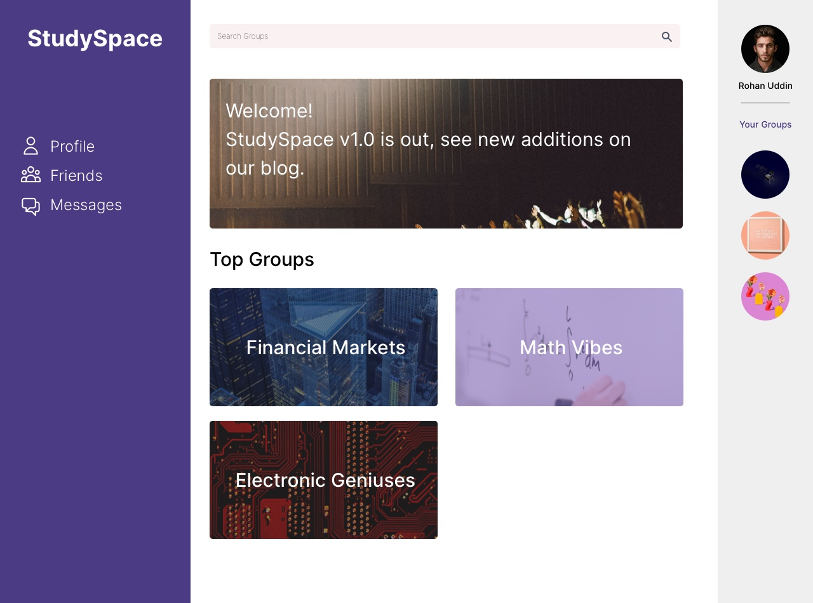

Software Requirements Specifications
Version 1.2
StudySpace is a web application that provides post-secondary
students with access to virtual spaces that foster unique social
learning environments. The purpose of this project is to promote
a sense of unity and community among students by helping them
meet new peers, connect, and study together.
The purpose of this document is to establish the requirements of
the project from an implementation perspective. Additionally,
this document lays the foundation for all group processes from
start to finish by outlining the vision for the project. This
document is intended to be used by developers, users, and any
other individual who wants to learn the concept of this
application and how it’s features work.
StudySpace allows users to search for and join virtual study
groups. User benefits include improving academic success, making
friends, and gaining a sense of community among peers. The
objective of StudySpace is to help students find groups of
like-minded individuals who they can collaborate with
-regardless of their physical locations. Through the use of this
product, students who are enrolled in online courses do not miss
out on the benefits of group work and peer discussion.
-
CHAT
A Chat is a feature where all members of a Group can send
text messages to each other. The Chat is viewed through a
chat box on the Group’s page.
-
DESK
A Desk is a virtual space wherein students may collaborate.
Each desk is temporary; it only exists as long as there are
people using it. After everyone leaves the desk, it is
removed from memory
Each desk has an admin who can set a limit to the number of
members and can add signifiers such as language, age
category, and other factors.
-
FRIEND
Any two Users can become Friends if one sends a Friend
Request and the other accepts it. When two Users are
Friends, they are able to send private chats directly to one
another.
-
GROUP
A Group is a collection of two or more users who have
connected through StudySpace either by Invitation or a User
Match. All members of a Group automatically have access to a
Chat upon joining.
-
GROUP NAME
A Group Name is the name of a Group. The Group Name is set
by a member of the Group. The Group Name must be unique so
that other Users can easily discover the Group via Search.
-
INITIAL AUDIENCE
This product is for David Brown, who is the initial User.
-
INTERESTS
Interests refer to the parameters that the user has chosen
and the ranking of these parameters. The choice and ranking
of parameters are key to determining User Matches.
Example: Alice has chosen the following parameters:
- Friends
- CP104
- Programming
- Co-op
-
INVITATION
An Invitation is the opportunity for a User to join a Group.
Any member of a Group can choose to send an Invitation to a
User who isn’t already a member.
-
PAGE
A Page is where Posts are viewed. Each Group can have one or
more Pages.
-
POST
A Post is an object which can include photos and text. Posts
are created by Users for all members of a Group to see.
Users can make a Post about anything they wish, including:
buying/selling textbooks, asking questions, looking for
advice, etc. Users can write a Response to a Post.
-
PROFILE
A Profile is a page with personal information about the
user. The Profile also provides functionality such as
managing group memberships and accessing chats.
-
RESPONSE
A Response is a text message which is linked to a Post.
-
SEARCH
Search is a function of the app where Users can search and
discover Groups by Group Name or Users by Username.
-
STUDY SPACE
StudySpace refers to the web application created by the Team
for the Initial Audience, David Brown.
-
TARGET AUDIENCE
Students are the intended users of this product.
-
TEAM
Team refers to students in CP317 W21 Team 2.
-
USER
A User is someone who uses the application; likely a
Student.
-
USER MATCH
Users have the option to enter their interests, such as
various preferences, courses they are enrolled in, and their
study habits. Users who are both members of the same group
have the possibility of getting matched. The more common
interetss, the more likely they are to be matched. When a
User Match occurs, the matched users show up in each other’s
list of user matches, found on the page of the group they
were matched in.
-
USERNAME
A Username is part of a User’s account information. A
Username is the name by which a User is referred to on the
app.
IEEE. IEEE Std 830-1998 IEEE Recommended Practice for Software
Requirements Specifications. IEEE Computer Society, 1998
The rest of this document contains details about the overall
description and specific requirements of the project. Section 2
contains information about the product perspective, product
functions, user characteristics, constraints, and dependencies.
Section 3 discusses external interfaces, functions, logical
database requirements, and software system attributes.
StudySpace is an independent, self-contained web application.
Core features are personalized profiles, groups, chats and pages
in each group. It is a web application with 2 components: user
interfaces (front end), and software interfaces (back end).
User sign-up
-
Upon entering the domain of StudySpace, guests will be
prompted to create a username and enter an email and
password that will be used as their login credentials.
-
Once signed up, users will have the option to enter
interests or begin manually searching for StudySpace
matches.
-
Users will be able to choose usernames, educational
institutions, and other personal information in their
profile settings.
User sign-in
-
The Sign in here link enables existing users to log-in
assuming they have already completed the User sign-up
process.

Profile
-
Located on the left sidebar, and remains present as users
navigate the application.
-
After clicking the Profile button, signed-in users may have
the option of reviewing and changing user account
information. User information available for editing are the
user’s username, password, educational institution and
interests for potential user matches and group
recommendations.
Friends
-
Located on the left sidebar, and remains present as users
navigate the application.
-
After clicking the Friends button, a pop-up containing a
list of the user’s friends’ profiles will surface. To the
side of each friend’s profile is a set of buttons (Add,
Remove, View Profile, Send Message) that will give the user
the options to change their friendship status with each
friend, view their profile and posts, and send a message.
Messages
-
Located on the left sidebar, and remains present as users
navigate the application.
-
After clicking the Messages button, a pop-up will surface
containing a list of the user’s messages with other users of
the app.
- Contains all user chat logs, both past and active.
Search bar
-
Located at the top of the application, and remains active
throughout user navigation.
-
After clicking the Search bar, a view will be expanded
containing potential groups of interest that the user may
request to join or the posts of which the user may view.
-
Allows users to search for groups of interest to join or
view posts.
Groups bar
-
Located on the right sidebar; remains present as users
navigate the application.
-
Scrollable sidebar containing the icons of all groups the
user is a member of.
-
After clicking the Your Groups link, an expanded view of the
user’s groups containing each group name will appear,
similar to how they appear under the Top Groups section.
Top Groups
- Links to groups in which the user is most active in.
-
Will be measured by the amount of posts the user has
published in each of their groups.
StudySpace Blog
-
Allows users to view StudySpace patch notes and version
history.
Posts
- Allows users to create posts for the selected group.
-
Posts are sorted chronologically (newest to oldest) or by
popularity (most popular to least popular) depending on user
settings.
-
Group members may respond to any posts within said group.
-
If a user clicks on a post, they will be brought to a new
page consisting of the post and it’s responses.
-
Only a small number of posts are loaded initially to fit the
users screen. More posts will load as the user scrolls down.
-
If no posts have been made to a group, a message is
displayed which says, “There are no posts here.”
-
When creating a post, there are requirements that must be
met before it can be published. All posts need a title and
at least one character of body text.
Live Chat
-
Online chatting service available to all group members where
active online users may converse without the need to create
posts.
Top Groups
-
Contains profiles of group members that express similar
interests to the user.
-
Users can view their match's interests in-order to judge if
they are an appropriate match.
-
Both parties will be notified that they are a match and may
message or add the matched user as a friend.
Users can create their own group with a desired set of members
or a specific topic. New groups may not share a name with
existing groups. Users can create posts, comment on posts, chat,
log in, and send friend requests to other users.
2.3. Actors and Use Cases
-
2.3.1.1
Create Moderator: Involves selecting the “Create User”
option and adding a username and password to the list of
users with moderator rights to the website.
-
2.3.1.2 Delete Moderator: Involves
selecting the “Remove Moderator” option and entering the
username of the moderator to be removed from the moderator
list.
-
2.3.1.3 Delete User Profile: Involves
selecting the “Delete User” option and entering the username
of the general user to be deleted.
-
2.3.1.4 Edit Home Page: Involves selecting
“Edit Page” and then selecting “Home Page” and changing the
text, photos, posts, and other content on the home page.
-
2.3.2.1
Report User: Involves selecting the “Manage User” option and
entering the username of the user to be reported.
-
2.3.2.2 Send Warning: Involves selecting
the “Manage User” option and entering the username of the
user who needs to be sent a warning.
-
2.3.2.3 Involves selecting the “Manage
Group” option and entering the name of the group from which
a user needs to be removed. From there, select the user from
the list of group members that needs to be removed from the
group.
-
2.3.2.4 Involves selecting the “Manage
Group” option and entering the name of the group from which
the group chat needs to be deleted.
-
2.3.3.1
Search: Involves using the search bar to find groups, posts,
and users.
-
2.3.3.2 Create Group: Involves selecting
the “Create” option and filling in the name of the new group
and selecting moderators.
-
2.3.3.3Join Group: Involves searching for a
group and selecting “join”, or accepting an invite to the
group.
-
2.3.3.4 Involves navigating to a group page
and selecting “create new post” and entering a title and
body text.
-
2.3.3.5 Edit Post: Involves selecting the
post to be edited and selecting “edit”. Note: only the
author of a post can edit it.
-
2.3.3.6 Delete Post: Involves selecting the
post to be edited and selecting “delete”. Note: only the
author of a post can delete it.
-
2.3.3.7 View Post: Navigate to the page
where the post has been published.
-
2.3.3.8 Comment: Navigate to the post,
select the post, then select “comment”.
-
2.3.3.9 Create Profile: If not already
logged in, the user will be presented with the sign-up page
where they can select “sign up” and from there they will
create a new profile.
-
2.3.3.10 Edit Profile: Involves selecting
“Profile”, selecting “Edit Profile” and allows users to edit
their username, password, educational institute, interests,
and other personal information.
-
2.3.3.11 Delete Profile: Involves selecting
“Profile”, selecting “Edit Profile”, and then selecting
“Delete Profile”.
-
2.3.3.12 Send Invite: Involves searching
for a user from the group page, selecting their profile, and
then selecting “Send Invite”. This will send the user an
invitation to the group from which the invitation was sent.
-
2.3.3.13 View Recommended Users: Involves
navigating to a group’s main page. The list of recommended
users based on membership in this group will appear on the
right side of the screen.
-
2.3.3.14 Match with Recommended Users:
Involves selecting a user from a list of recommended users
and then after getting redirected to their profile,
selecting “Accept Match”.
-
2.3.3.15 Pass on Matching with Recommended
User: Involves selecting a user from a list of recommended
users and then after getting redirected to their profile,
selecting “Decline Match”.
-
2.3.3.16 Send Chat: Involves navigating a
chat box (direct message or group chats), entering a
message, and selecting “Send”.
-
2.3.3.17 Add Friend: Involves selecting a
user account and selecting “Add Friend” to add that profile
to the user's friend list.
-
2.3.3.18 Remove Friend: Involves selecting
a friend’s profile and selecting “Remove Friend” to remove
that profile from the user's friend list.
Post-secondary students are the intended users of this product.
As such, it is assumed that the user has experience using a web
browser and navigating websites. It is helpful — but not
necessary — for the user to have experience with common social
media applications, such as Reddit, Instagram, or Twitter. This
experience should aid the user in learning how certain features
of StudySpace work, such as chat, due to the similarities to
other social media applications.
A large number of users must be able to access the website at
once. To ensure the website is reliable, smooth, and feels
responsive to the user, chat logs should update within a second
whenever a user sends a chat.
2.6. Assumptions and Dependencies
It is assumed that users have a functioning, web-capable
computer (desktop or laptop) with a browser installed. Users are
expected to have an internet connection for the entire duration
of their session. StudySpace should be compatible with any
desktops operating system.
Creating, editing, deleting post
-
Once a user has created a post, they can edit or delete the
post by accessing it via the group page where it is posted.
Searching
-
Any additional spaces or misspelled words in the search bar
must be understood. For example “CP31 7 Wilfred” must show
the intended results of “Cp317 Wilfrid”.
-
Implemented by a Full-Text-Search in the relational database
which is part of the backend.
User sign-in
-
When users sign in, the email form must be in proper email
format (eg; having “@” in their email address”).
- There are no password requirements.
- Users stay logged in until they sign out.
| USER: |
contains a record for every user that has created a
profile
|
| Fields |
-
userID - A unique ID given to all users who
sign up for StudySpace.
-
username - The username in which the user is
referred to on the app.
- firstName - The first name of the user.
- lastName - The last name of the user.
- email - The email address of the user.
- password - The password of the user.
-
registerDate - The date the user created an
account on StudySpace.
-
interest1 - An interest of the user used for
generating User Matches.
-
interest2 - An interest of the user used for
generating User Matches.
-
interest3 - An interest of the user used for
generating User Matches.
-
program - The academic program which the
user is enrolled in.
-
picture - A picture that the user can upload
for their display picture.
|
| Relationships |
The User ID is the primary key of the USER table.
|
| FRIENDS: |
contains a record for every friendship relation |
| Fields |
- userID - The unique ID of a user.
-
friendID - The unique id of a user who is
friends with the user associated with
user_id.
-
startDate - The date on which the two users
with user IDs matching user_id and friend_id
became friends on the platform.
-
Status - There are 3 possible statuses of a
friend request:
-
Send friend request (not yet
friends)
-
Pending friend request (request sent
but not accepted)
-
- Friends (request accepted; users
are now friends)
|
| Relationships |
The friend ID is the primary key of the FRIEND
table.
|
| GROUP: |
contains a record for every group in the system |
| Fields |
-
groupID - A unique ID given to a group when
it is created.
- groupName - The name of the group.
-
picture - A picture that a group member
uploaded for the group's display
-
creationDate - The date the group was
created
|
| Relationships |
The group ID is the primary key of the GROUPS table.
|
| POSTS: |
contains a record for every post that has ever been
published
|
| Fields |
- postID - The unique ID of the post.
-
groupID - The unique ID of the group that
uploaded the post.
- title - The title of the post.
-
body - The actual body/message of the post.
-
postTimestamp - The date and time the post
was posted.
|
| Relationships |
The post ID is the primary key of the POSTS table.
|
| RESPONSES: |
contains a record for every response that has ever
been made to a post
|
| Fields |
-
responseID - The unique ID of the response
on a given post.
-
body - The body/message of the response.
- postID - The unique ID of the post.
-
responseTimestamp - The date and time the
response was posted.
|
| Relationships |
The response ID is the primary key of the RESPONSES
table.
|
| USER_GROUP: |
contains a record for every member of every group.
|
| Fields |
- groupID - The unique ID of the group.
-
Moderator - Boolean value representing
whether the user is a moderator.
-
userID - The unique ID of the user that is
in the group.
|
| Relationships |
groupID and userID are the foreign keys for the
USER_GROUP table.
|
The website must be quick and responsive to all screens above
320px in order to meet usability requirements. From the
front-end perspective, content must load quickly and transitions
between pages should be seamless. 95% of the transactions shall
be processed in less than 1 second.
Any access to the StudySpace backend needs to be verified to
ensure that only authorized administrators/moderators have
access. Authorization involves entering a valid username and
password to an account with administrator privileges. When an
administrator or moderator logs into the system, they are
granted permissions to edit, create, and delete content.
StudySpace must be accessible on any desktop device that is
web-capable and has a browser. Therefore, StudySpace must be
compatible with any operating system, including Windows, MacOS
and Linux. The product must also be compatible with any browser,
including Chrome, Firefox, Internet Explorer, Edge, and Safari.
Author(s)
Initial Requirements document created
- Dayton Talarico
- Rohan Uddin
- Arvin Benipal
- Muhammad Hashir
- Mackenzie Van Zanden
Document reformatted and expanded use case definitions
- Dayton Talarico
- Janelle Tait
Version 1.2 - 11/02/2021
Adjusted document upon SQA suggestions
- Dayton Talarico
- Janelle Tait
- Rohan Uddin
- Arvin Benipal
- Muhammad Hashir
Thanks to SQA by
- Ann Baldonasa
- Arshdeep Sahi
- Shyam Dave
- David Rosien
- Matthew Francis
- Evan Surtel
Version 1.3 - 24/03/2021
Removed mention of tutors as this will no longer be a part of
the software
- Dayton Talarico
- Janelle Tait
HTML reformatted according to bootstrap theme